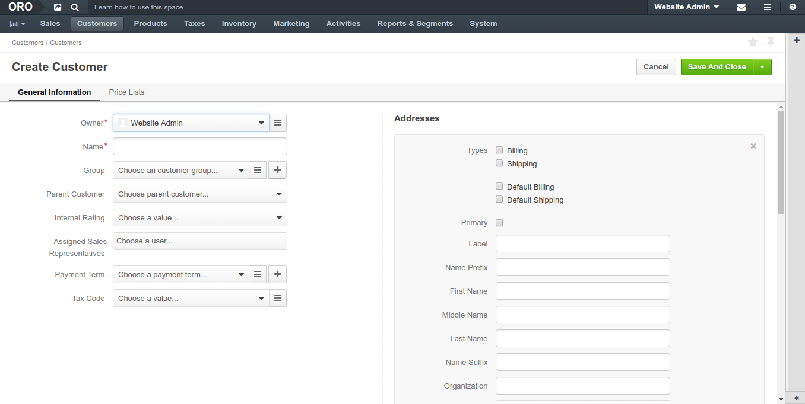

Customers¶
In Customer section you can manage the customers who represent a group of buyers related to the same business organization: add a new customer and view, edit and delete existing customers, and access the aggregated information about customer users activities and eCommerce operations (requests for quotes, quotes, and sales orders).
You can also quickly get to the customer organization structure, an address book with a preview on the map, customer users:, price lists enabled for the customer, and overview of requests for quote, sales orders, quotes created by and for customer users. Finally, you can get to a summary of activity from every operation triggered by the customer users.

Create a Customer¶
To create a new Customer:
Navigate to Customers > Customers in the main menu.
Click Create Customer.
The following page opens:
Optionally, select an existing account to help tracking sales actions and metrics for the customer that is a member of bigger customer organization. When remains empty, the new account is created for the new customer automatically.
Fill in the customer Name.
Optionally, add a customer to a customer group if you already have a group with the settings and configuration that fits the new customer.
If you are adding a subsidiary of the existing customer, select Parent Customer.
Assign a sales representative who will be assisting customer users.
Select Tax Code that will label the customer group taxation schema.
Add a billing and shipping address as described in the address book section.
In the Additional section, select a Payment term to be used as a payment option available to the customer users during on the checkout.
In the Price Lists section, add pricelists and prioritize them as described in Price List Management for a Customer Group section.
When OroCommerce is deployed with InfinitePay payments support, the customer’s VAT Id shall be captured for their credit worthiness verification. VAT Id should be valid and the billing address should match the one provided for the VAT registration. These are prere uisites to enable payments via InfinitePay for the customer users.
Click Save in the top right right corner of the page.
A new Customer is created.
Export¶
You can export the customer details in the .csv format:
- Select the items to export using check boxes at the beginning of the corresponding rows. You can filter the list and use the Select All option in the table header, if necessary.
- Click Export.
Later you can import the updated or processed customer information using import as described below.
Import¶
To streamline adding a large bulk of items, like customer information, products, prices or inventory information, you can import the bulk details from a .csv file.
Import the customer information using the .csv file that follows the customer details data structure.
To import a bulk of customer information:
- Navigate to the Customers > Customers.
Get a sample: To download a sample .csv file with the necessary headers, click Download Data Template in the list next to Import.
Note
Follow the on-screen guidance for any additional actions. For example, for the inventory template, select one of the options: a) inventory statuses only or b) detailed inventory levels.
Prepare data for import: Based on the downloaded file, create your bulk information in .csv format. Once your file is ready, click Import, select the prepared comma-separated values (.csv) file, and click Submit.
Validate import results: Review import validation results. If there are any Records with errors, fix them in the .csv file prior to starting the import.
Launch import: After successful validation, click Import.
Interactive status messages inform about the import progress and once the import is complete, the changes are reflected in the list upon refresh. Additionally, an email message with the import status is delivered to your mailbox.
See this two minute demo of the import process:
Related Information